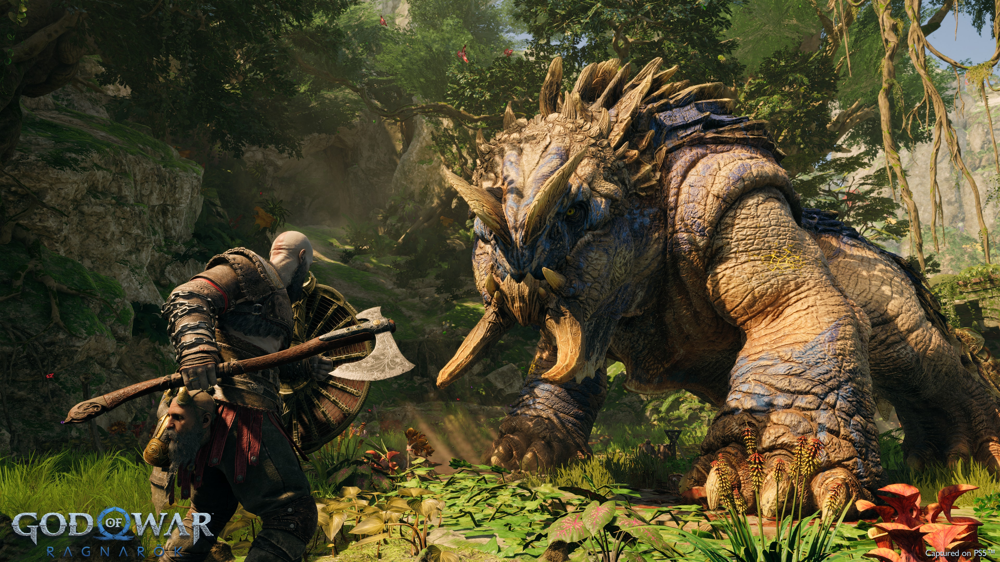

Marvel’s Spider-Man: Miles Morales
បន្ទាប់ពីព្រឹត្តិការណ៍នៃ Marvel's Spider-Man Remastered ក្មេងជំទង់ Miles Morales កំពុងសម្របខ្លួនទៅនឹងផ្ទះថ្មីរបស់គាត់ ខណៈពេលដែលដើរតាមគន្លងរបស់អ្នកណែនាំរបស់គាត់គឺ Peter Parker ក្នុងនាមជា Spider-Man ថ្មី។

God of War Ragnarök
រាល់ដំណើរផ្សងព្រេងដ៏អស្ចារ្យគឺជារឿងមួយដែលរង់ចាំការប្រាប់ រស់ឡើងវិញ Kratos និងដំណើររឿង Norse របស់ Atreus តាំងពីដើមដំបូងនៅក្នុង Myths of Midgard ។ អ្នកដែលថ្មីចំពោះ God of War នឹងត្រូវបានព្រមានជាមុន៖ ការរំខាននៅខាងមុខ។

Assassin's Creed® Origins
ASSASSIN'S CREED® ORIGINS គឺជាការចាប់ផ្តើមថ្មី *ដំណើរកម្សាន្ត Discovery ដោយ Assassin's Creed®៖ អេហ្ស៊ីបបុរាណគឺអាចរកបានឥឡូវនេះជាការអាប់ដេតដោយឥតគិតថ្លៃ!* អេហ្ស៊ីបបុរាណ